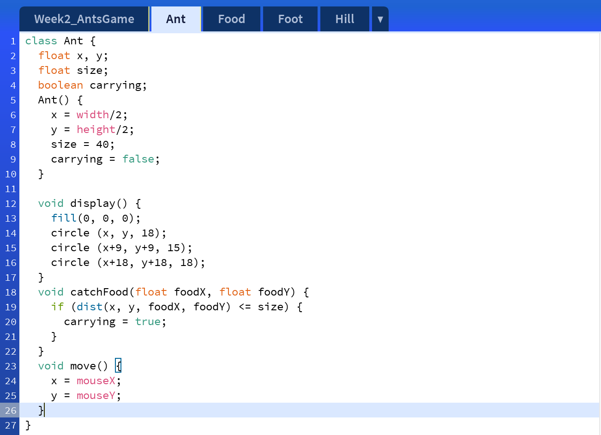
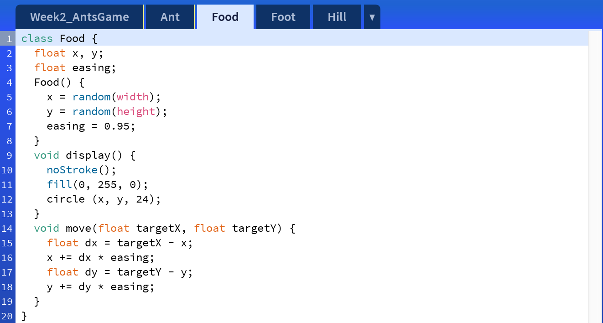
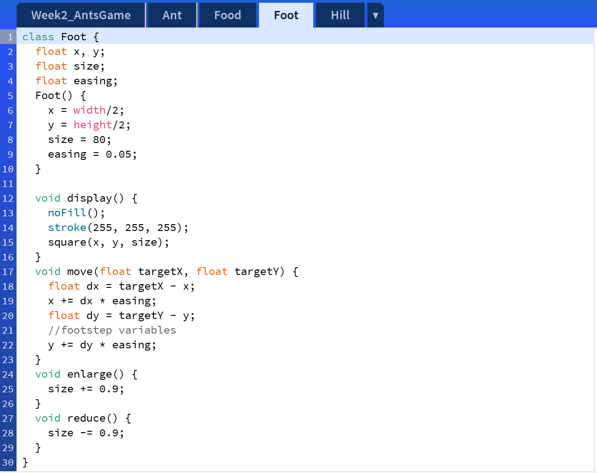
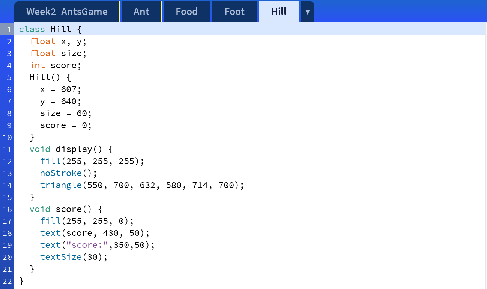
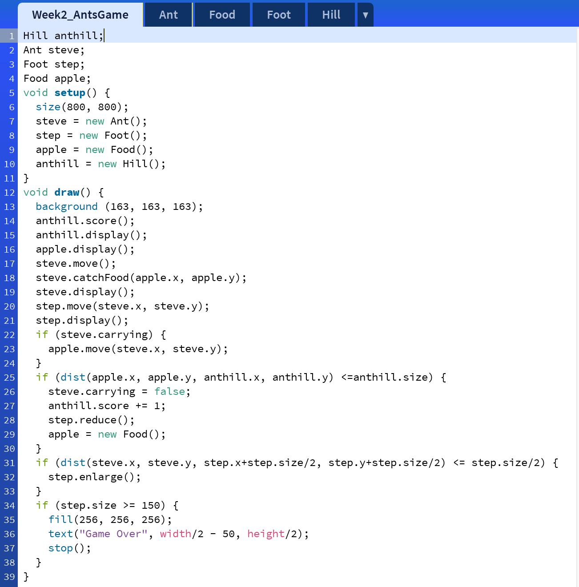

from last Week, I added more components into the system to make the porject more close to the reality and more engaged.
I think it is really interesting to see how the ant lives in the human city, and I beg everyone has observed how ants move their food back to their home and how they around the walking people and obstacles either on the street or at the park. So I decide to program that scene in processing as my first project. At first, I imagined that there will be an ant trying to avoid being stepped on by people, and if it got stepped, the game is over. In order to make this process more close to the reality and to be fun to play with, I added the food and anthill components and add a carry-food task. While ant is keeping away from human to step it, ant also need to find the food and bring back food to the anthill and collect as much food as it can. Since I suddenly have 4 components in my system (ant, food, foot, anthill) and 3 of them are moving components, it is hard for me to make the 3 move in the certain pattern (food and the human follow the ant). During my research, I found the easing function on the Processing’s preference page, and I used easing a lot to make the food and the human follow after and created a pattern that the ant would carry the food and try to get away from the human by simply adjust the easing value. For the future, I would like to change the human’s walking path to be unpredictable. The walking path can be random as a bouncing ball inside of the window.





The image below shows first start the game, you need to use cursor to control the ant from a square which represents the human's footstep.
The image below shows when the ant has catched the food (green dot), you need to use cursor to control the ant with the food escape from the square's chase and look for the anthill.
The image below shows when the ant bring the food back to anthill (white triangle), there would be new food generated and add 1 score to the scoreboard shows on the middle top.
The image below shows when the foot has stepped on the ant, it would enlarge the size of the step, and when the step size reach to 150 pixels, the game is over.
Week 3: Reading Response
Stephanie Houde and Charles Hill, What do Prototypes Prototype?
Quote 1: "In fact, these three prototypes were developed almost in parallel. They were built by different design team members during the early stages of the project. No single prototype could have represented the design of the future artifact at that time. The evolving design was too fuzzy—existing mainly as a shared concept in the minds of the designers. There were also too many open and interdependent questions in every design dimension: role, look and feel, implementation."
Note: I think developing 3 prototypes as the same time is an essential way to achieve the final design goal. Since working separately would not limit the creativity and possibility of the design. For example, while designers defining the look and feel prototype, they would not consider about the implementation at this stage, and no-one would come to them and tell them this could not work, which make the prototypes close to the original design purpose. In this way, it is also convenient to organize and clarify the issues among 3 prototypes in the final stage.
Quote 2: "They simulate what it would be like to look at and interact with, without necessarily investigating the role it would play in the user’s life or how it would be made to work."
Note: I believe how user would use and when they would use it should also be considered while developing the look and feel prototype. For example, if we are designing a product for elders or disabled, designer should keep in mind product’s role in developing the look and feel prototype. How could they interact with the product? How would they use the product? How often do they use? Where do they use at? Those questions should be answered while creating the look and feel of the design.
Quote 3: "Designers make implementation prototypes as experiments for themselves and the design team, to demonstrate to their organization the technical feasibility of the artifact, and to get feedback from users on performance issues."
Note: Once the designer has determined the time they plan to launch the product, or the time period the product would last in the future, the implementation prototype would not be that necessary. Since, if the prudct is designed to launch after 20 years from now, the product can be really conceptual, even some features and functions cannot be supported based on nowadays technology, but there would be a time in the future that the new inventions would help to build the product. The implementation prototype cannot only be tested by now but also can be considered in the future.